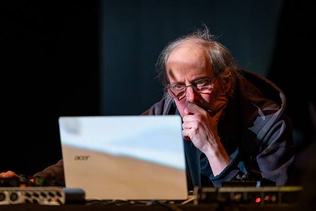

Sound Art / Art Sonore / Installation Sonore
Origine Art Sonore : Ma selecta d'oeuvres 50-90
Avant Fluxus : l'école expérimentale de New York
• Le son devient rééllement une matière
• L'indétermination, l'aléatoire
• L'expérience et l'aspect performatif
• La transmission et la poursuite de principes d'écoles de pensée
Un rapport constant à la technique
• Mécanique -> Electrique -> Electronique
Écrire, interpréter... ou laisser jouer.
“Où que nous soyons, ce que nous entendons est essentiellement du bruit. Quand nous l'ignorons, il nous dérange. Quand nous l'écoutons, nous le trouvons fascinant.”
Fluxus serait alors “ni un mouvement particulier ni un style particulier. Ce n’est sans doute pas un rassemblement organisé d’individus recherchant un même objectif artistique. Fluxus est peut-être une attitude, un esprit particulier envers la création artistique, l’art et la vie.”
Nam June Paik, au delà de la vidéo, le son et le lien à la technologie

Une composition qui devient installation sonore, la très connue Organ²/ASLSP de John Cage.

Composer l'espace, le pionnier Max Neuhaus

Ils essaient de définir l’art sonore, On peut essayer aussi ?
“L’Art Sonore. Je trouve que c’est un terme pratique, mais pourquoi ? Je l’applique à des pièces que je réalise en utilisant des ressources électro-acoustiques et dans lesquelles j’ai l’intention qu’elles soient présentes dans des galeries, des musées et d’autre endroits où le son est, de plus en plus, perçu comme un média en soi, comme la vidéo, les lasers, mais pas comme une performance. [..] Je pense que peut-être que ce que l’on appelle «l’Art Sonore» n’a pas l’intention de se connecter au langage. Et au final, tous les styles de musique, de performance deviennent des langages, même les œuvres anti-linguistiques de John Cage, alors que les gens se familiarisent de plus en plus avec ses intentions et ses mondes sonores. Néanmoins, le terme a peut-être été évoqué de manière pragmatique pour et par les conservateurs de musées pour rendre compte de l'acceptation du son dans leur monde.”
“S'il y a une raison valable de classer et de nommer les choses dans la culture, c'est certainement pour le raffinement des distinctions. Les expériences esthétiques se situent dans le domaine des distinctions fines, et non de la destruction des distinctions pour la promotion d'activités avec leur plus petit dénominateur commun, dans ce cas, le son. Une grande partie de ce que l’on a appelé le «l’Art Sonore» n’a pas grand-chose à voir avec le son ou l’art”
“Je pense que c’est une bonne chose qu’il y ait un intérêt envers le son et la musique, car la globalité des structures du monde de l’art ne sont pas prêtes pour cela, car le son nécessite différentes technologies et différentes architectures pour être présenté. On imagine toujours les galeries et les musées comme des galeries du 19ème siècle :”comment allons-nous l’accrocher au mur, comment allons-nous l’éclairer?” mais personne ne s’y connaît en son - comment orienter une enceinte, comment l’égaliser en fonction de la pièce. Il n’y pas ce genre d’expertise au sein du monde des musées. De plus en plus de musées possèdent des pièces d’écoutes mais il y a beaucoup de changements qui ont besoin d'être fait avant que le monde de l’art soit réellement prêt à présenter le son comme art”
Musique ou art sonore ? On va essayer de triturer la notion
Prendre du recul
Des exemples contemporains
Tarek Atoui
Whispering Playground


Ioana Vreme Moser, Mineral Amnesia et Warble Buoys
Mineral Amnesia


Warble Buoys


Art Sonore Interactif : Le travail de Vahan Soghomonian et ses ORG
ORG


ORG-RCHBRN


ORG-MITRA


Pure Data
?
Max et Pd, une histoire commune
Miller Puckette
